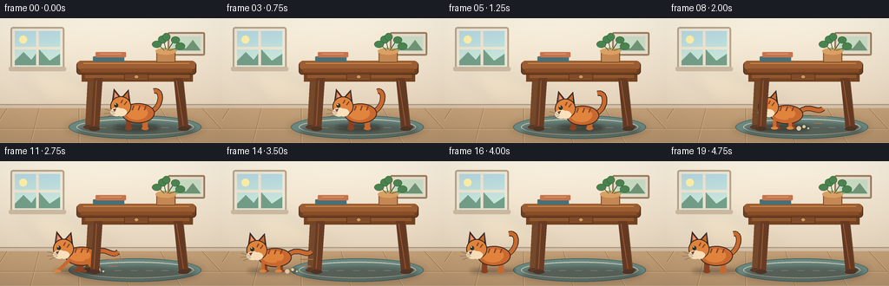
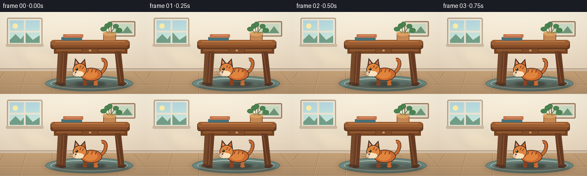

CODING AGENTS AS PIXEL WORLD MODELS
traex/GPT-5.6-Sol · dynamic_spatial_relationship_0015
点击播放 · 原生 RGB 像素
逐轮保存的候选
回放视频、检查图与代码变化。
每份候选均可单独播放。实际图片检查记录在下方工具轨迹中。
候选 01播放与检查图
点击播放 · 原生 RGB 像素


展开代码变化
--- 上一保存版本
+++ 本次保存版本
@@ -0,0 +1,283 @@
+from pathlib import Path
+import math
+import numpy as np
+from PIL import Image, ImageDraw, ImageFilter
+import artifact_io
+
+W, H, N = 256, 144, 20
+S = 4
+
+
+def sc(v):
+ return int(round(v * S))
+
+def box(b):
+ return tuple(sc(v) for v in b)
+
+def pts(p):
+ return [(sc(x), sc(y)) for x, y in p]
+
+def bezier(p0, p1, p2, p3, n=28):
+ out = []
+ for t in np.linspace(0, 1, n):
+ u = 1-t
+ out.append((u**3*p0[0]+3*u*u*t*p1[0]+3*u*t*t*p2[0]+t**3*p3[0],
+ u**3*p0[1]+3*u*u*t*p1[1]+3*u*t*t*p2[1]+t**3*p3[1]))
+ return out
+
+
+def line(draw, xy, fill, width, joint='curve'):
+ draw.line(pts(xy), fill=fill, width=sc(width), joint=joint)
+
+
+def base_room():
+ # A softly graded, warm interior, rendered large and antialiased at the end.
+ h, w = H*S, W*S
+ yy, xx = np.mgrid[0:h, 0:w]
+ wall_t = np.clip(yy/(101*S), 0, 1)
+ top = np.array([250, 242, 224], dtype=float)
+ bottom = np.array([229, 211, 187], dtype=float)
+ rgb = top[None,None,:]*(1-wall_t[:,:,None]) + bottom[None,None,:]*wall_t[:,:,None]
+ # Warm daylight blooms from the upper-left window.
+ glow = np.exp(-(((xx-43*S)/(86*S))**2 + ((yy-35*S)/(72*S))**2))[:,:,None]
+ rgb = rgb*(1-0.08*glow) + np.array([255,250,224])[None,None,:]*(0.08*glow)
+ rgb = np.clip(rgb, 0, 255).astype(np.uint8)
+ im = Image.fromarray(rgb, 'RGB')
+ d = ImageDraw.Draw(im)
+
+ # Window with a distant blue sky.
+ d.rounded_rectangle(box((12, 10, 74, 59)), radius=sc(3), fill=(238,231,213), outline=(183,164,139), width=sc(2))
+ d.rectangle(box((17,15,69,54)), fill=(181,216,224))
+ # Sky gradient stripes and distant trees.
+ for y in range(15, 55):
+ q = (y-15)/40
+ col = (int(181+25*q), int(216+18*q), int(224-8*q))
+ d.line((sc(17),sc(y),sc(69),sc(y)), fill=col, width=sc(1))
+ d.ellipse(box((22,20,31,29)), fill=(255,240,170))
+ d.polygon(pts([(17,49),(27,39),(36,48),(45,36),(57,49),(69,41),(69,54),(17,54)]), fill=(116,159,137))
+ d.rectangle(box((41.5,15,44.5,54)), fill=(237,228,209))
+ d.rectangle(box((17,33,69,36)), fill=(237,228,209))
+ d.rounded_rectangle(box((10,56,76,61)), radius=sc(2), fill=(205,187,163))
+
+ # Gentle sunlight on wall.
+ sun = Image.new('RGBA', im.size, (0,0,0,0)); sd = ImageDraw.Draw(sun)
+ sd.polygon(pts([(17,59),(67,59),(142,101),(57,101)]), fill=(255,242,180,22))
+ sun = sun.filter(ImageFilter.GaussianBlur(sc(8)))
+ im = Image.alpha_composite(im.convert('RGBA'), sun).convert('RGB'); d = ImageDraw.Draw(im)
+
+ # Baseboard and wooden floor.
+ d.rectangle(box((0,99,256,104)), fill=(211,192,168))
+ d.rectangle(box((0,99,256,100)), fill=(173,151,127))
+ for y in range(104, H):
+ q=(y-104)/40
+ col=(int(196-18*q), int(160-15*q), int(119-11*q))
+ d.line((0,sc(y),sc(W),sc(y)), fill=col, width=sc(1))
+ # Floor seams/perspective and highlights.
+ for x0, x1 in [(-18,8),(35,45),(91,91),(148,137),(208,185),(270,233)]:
+ line(d, [(x0,144),(x1,104)], (139,111,82), .55)
+ line(d, [(x0+1,144),(x1+1,104)], (216,183,141), .45)
+ line(d, [(0,127),(256,127)], (155,125,93), .6)
+ line(d, [(0,128),(256,128)], (212,177,136), .45)
+
+ # Small framed print keeps the wall lived-in without competing with the action.
+ d.rounded_rectangle(box((193,16,236,43)), radius=sc(2), fill=(232,221,202), outline=(152,125,96), width=sc(2))
+ d.rectangle(box((198,21,231,38)), fill=(201,219,195))
+ d.polygon(pts([(199,37),(207,29),(214,35),(222,25),(231,37)]), fill=(112,149,119))
+ return im
+
+
+def draw_rug_and_shadows(im):
+ ov=Image.new('RGBA', im.size, (0,0,0,0)); d=ImageDraw.Draw(ov)
+ d.ellipse(box((75,111,235,141)), fill=(58,47,36,35))
+ ov=ov.filter(ImageFilter.GaussianBlur(sc(4)))
+ im.alpha_composite(ov)
+ d=ImageDraw.Draw(im)
+ d.ellipse(box((79,112,232,139)), fill=(109,136,128,105), outline=(75,104,99,100), width=sc(1))
+ d.ellipse(box((88,116,223,135)), outline=(207,213,192,90), width=sc(1))
+ # Sparse rug dashes establish surface direction.
+ for x in range(96,221,18):
+ line(d, [(x,126),(x+8,126)], (221,218,191,80), .55)
+
+
+def draw_table_back(im):
+ d=ImageDraw.Draw(im)
+ # Rear legs are paler, helping depth while preserving the under-table opening.
+ d.polygon(pts([(101,69),(109,69),(106,126),(98,126)]), fill=(116,73,43,255))
+ d.polygon(pts([(204,69),(211,69),(217,126),(208,126)]), fill=(112,70,42,255))
+ d.ellipse(box((96,123,108,128)), fill=(91,58,39,150))
+ d.ellipse(box((207,123,220,128)), fill=(91,58,39,150))
+
+
+def draw_table_front(im):
+ d=ImageDraw.Draw(im)
+ # Apron and near legs, with beveled highlights.
+ d.rectangle(box((94,61,222,73)), fill=(116,67,34,255))
+ d.rectangle(box((98,65,218,69)), fill=(145,87,45,255))
+ d.polygon(pts([(108,69),(118,69),(114,128),(104,128)]), fill=(104,60,36,255))
+ d.polygon(pts([(200,69),(210,69),(216,128),(206,128)]), fill=(101,58,35,255))
+ line(d, [(111,72),(108,124)], (151,93,52,255), 1.1)
+ line(d, [(203,72),(211,124)], (150,91,50,255), 1.0)
+ d.ellipse(box((102,125,115,130)), fill=(79,52,38,180))
+ d.ellipse(box((205,125,218,130)), fill=(79,52,38,180))
+ # Thick tabletop; the top lip is unmistakable.
+ d.rounded_rectangle(box((88,50,226,65)), radius=sc(4), fill=(112,64,33,255), outline=(78,47,30,255), width=sc(1))
+ d.rounded_rectangle(box((89,49,225,59)), radius=sc(4), fill=(156,94,50,255))
+ d.rectangle(box((93,58,221,62)), fill=(137,78,40,255))
+ line(d, [(96,52),(218,52)], (202,132,74,255), 1.2)
+ # a tiny drawer and handle
+ d.rounded_rectangle(box((143,64,171,72)), radius=sc(1.5), fill=(130,76,40,255), outline=(86,51,32,255), width=sc(.7))
+ d.ellipse(box((155,66,159,69)), fill=(204,157,97,255))
+
+
+def draw_tabletop_objects(im):
+ d=ImageDraw.Draw(im)
+ # Books and a plant are stationary visual anchors.
+ d.rounded_rectangle(box((107,44,143,50)), radius=sc(1), fill=(72,112,119,255))
+ d.rounded_rectangle(box((110,39,145,45)), radius=sc(1), fill=(198,116,76,255))
+ line(d, [(115,41),(140,41)], (239,191,151,255), .6)
+ d.rounded_rectangle(box((180,37,202,51)), radius=sc(2), fill=(197,136,83,255), outline=(119,76,44,255), width=sc(1))
+ d.ellipse(box((179,34,203,42)), fill=(219,161,99,255))
+ # stems and leaves
+ for a,b,c,dv in [(191,36,188,22),(193,37,201,25),(189,37,181,29),(195,37,207,33)]:
+ line(d, [(a,b),(c,dv)], (64,111,72,255), 1)
+ for b in [(182,20,192,29),(197,21,207,29),(175,26,186,34),(202,28,213,36),(187,17,196,26)]:
+ d.ellipse(box(b), fill=(76,132,80,255), outline=(52,102,62,255), width=sc(.5))
+
+
+def draw_cat_shadow(im, x, y, running=False):
+ ov=Image.new('RGBA', im.size,(0,0,0,0)); d=ImageDraw.Draw(ov)
+ rx=29 if running else 26
+ d.ellipse(box((x-rx,y-5,x+rx,y+2)),fill=(40,31,25,80))
+ ov=ov.filter(ImageFilter.GaussianBlur(sc(2.2)))
+ im.alpha_composite(ov)
+
+
+def draw_cat(im, x, floor_y, frame, pose):
+ d=ImageDraw.Draw(im)
+ orange=(202,105,47,255); orange_hi=(225,132,61,255); orange_dark=(139,66,35,255)
+ cream=(250,224,187,255); ink=(57,42,35,255)
+ run = pose == 'run'
+ # Motion accents remain subtle and only occur while crossing left.
+ if run:
+ speed = 1
+ for k,(dy,L) in enumerate([(-23,13),(-15,18),(-7,10)]):
+ line(d, [(x+30+2*k,floor_y+dy),(x+30+L+2*k,floor_y+dy)], (176,111,70,95), 1.0)
+ if frame in (8,11,14):
+ for dx,dy,r in [(17,-1,2.5),(23,-3,1.7),(28,-1,1.1)]:
+ d.ellipse(box((x+dx-r,floor_y+dy-r,x+dx+r,floor_y+dy+r)), fill=(224,202,164,130))
+
+ if run:
+ phase=2*math.pi*(frame-6)/4.0
+ bounce=-1.5*abs(math.sin(phase))
+ by=floor_y-14+bounce
+ # streaming tail behind (to the right), outlined first
+ curve=bezier((x+16,by-5),(x+30,by-17),(x+38,by-3+3*math.sin(phase)),(x+45,by-10+2*math.sin(phase)))
+ line(d, curve, ink, 6.2); line(d, curve, orange, 4.5)
+ # Four running legs behind/in front, alternating reach.
+ for idx, base_x in enumerate([-8,10]):
+ s=math.sin(phase+idx*math.pi)
+ knee=(x+base_x+7*s,by+8)
+ paw=(x+base_x+13*s,floor_y-1)
+ line(d, [(x+base_x,by+2),knee,paw], orange_dark, 4.2)
+ d.ellipse(box((paw[0]-4,paw[1]-2,paw[0]+4,paw[1]+1)), fill=orange_dark)
+ # body is elongated while running
+ d.ellipse(box((x-16,by-14,x+22,by+8)), fill=ink)
+ d.ellipse(box((x-15,by-13,x+21,by+7)), fill=orange)
+ d.ellipse(box((x-12,by-11,x+13,by+3)), fill=orange_hi)
+ # forward pair
+ for idx, base_x in enumerate([-11,7]):
+ s=math.sin(phase+idx*math.pi+math.pi)
+ knee=(x+base_x+8*s,by+9)
+ paw=(x+base_x+14*s,floor_y-1)
+ line(d, [(x+base_x,by+1),knee,paw], orange, 4.0)
+ d.ellipse(box((paw[0]-4,paw[1]-2,paw[0]+4,paw[1]+1.2)), fill=orange_hi)
+ else:
+ # Standing/crouched silhouette. A tiny idle bob keeps the opening alive.
+ bob = -0.45*math.sin(frame*1.35)
+ by=floor_y-15+bob
+ if pose == 'crouch':
+ by += 3
+ # upright, expressive tail at rear
+ wag=1.8*math.sin(frame*.75)
+ curve=bezier((x+17,by-5),(x+31,by-13),(x+30,by-32),(x+20+wag,by-29))
+ line(d, curve, ink, 6.2); line(d, curve, orange, 4.4)
+ # legs first
+ for lx,col in [(-9,orange_dark),(10,orange)]:
+ d.rounded_rectangle(box((x+lx-3,by+3,x+lx+3,floor_y)),radius=sc(2),fill=col)
+ d.ellipse(box((x+lx-4,floor_y-3,x+lx+4,floor_y+1)),fill=col)
+ d.ellipse(box((x-17,by-15,x+21,by+8)),fill=ink)
+ d.ellipse(box((x-16,by-14,x+20,by+7)),fill=orange)
+ d.ellipse(box((x-12,by-12,x+13,by+4)),fill=orange_hi)
+
+ # Head is always at the left/front, so direction of travel is explicit.
+ head_x=x-18; head_y=by-10
+ # ears outlined, then inset
+ d.polygon(pts([(head_x-10,head_y-8),(head_x-8,head_y-22),(head_x,head_y-12)]), fill=ink)
+ d.polygon(pts([(head_x+1,head_y-12),(head_x+9,head_y-21),(head_x+11,head_y-6)]), fill=ink)
+ d.polygon(pts([(head_x-8.3,head_y-10),(head_x-7.2,head_y-18.5),(head_x-1,head_y-11)]), fill=orange)
+ d.polygon(pts([(head_x+2,head_y-11),(head_x+8.2,head_y-18),(head_x+9,head_y-7)]), fill=orange)
+ d.polygon(pts([(head_x-6.8,head_y-12),(head_x-6.5,head_y-17),(head_x-2.5,head_y-11.5)]), fill=(232,153,128,255))
+ d.ellipse(box((head_x-12,head_y-13,head_x+12,head_y+10)),fill=ink)
+ d.ellipse(box((head_x-11,head_y-12,head_x+11,head_y+9)),fill=orange_hi)
+ # cheek/muzzle
+ d.ellipse(box((head_x-12,head_y,head_x+3,head_y+10)),fill=cream)
+ d.ellipse(box((head_x-6,head_y+1,head_x+7,head_y+10)),fill=cream)
+ d.polygon(pts([(head_x-9,head_y+2),(head_x-5,head_y+1),(head_x-7,head_y+5)]),fill=(113,66,62,255))
+ # visible side eye and highlight
+ d.ellipse(box((head_x-7.5,head_y-5,head_x-3,head_y)),fill=(49,55,39,255))
+ d.ellipse(box((head_x-6.7,head_y-4.5,head_x-5.5,head_y-3.2)),fill=(244,244,210,255))
+ # whiskers extend in travel direction
+ line(d, [(head_x-8,head_y+5),(head_x-18,head_y+2)], (81,66,57,210), .55)
+ line(d, [(head_x-8,head_y+6),(head_x-19,head_y+7)], (81,66,57,210), .55)
+ line(d, [(head_x-7,head_y+7),(head_x-16,head_y+11)], (81,66,57,180), .5)
+ # shoulder/back stripes
+ for off in [0,7,14]:
+ xx=x-3+off
+ line(d, [(xx,by-12),(xx-2,by-7)], orange_dark, 1.6)
+ line(d, [(head_x+2,head_y-9),(head_x,head_y-5)], orange_dark, 1.5)
+ line(d, [(head_x+7,head_y-7),(head_x+4,head_y-3)], orange_dark, 1.4)
+
+
+def cat_position(i):
+ if i <= 4:
+ return 157.0, 'idle'
+ if i == 5:
+ return 157.0, 'crouch'
+ if i <= 14:
+ t=(i-5)/10.0
+ p=t*t*(3-2*t)
+ return 157 + (55-157)*p, 'run'
+ if i == 15:
+ return 55.0, 'crouch'
+ return 55.0, 'idle'
+
+
+def make_frame(i):
+ im=base_room().convert('RGBA')
+ draw_rug_and_shadows(im)
+ # Soft fixed table shadow.
+ sh=Image.new('RGBA', im.size,(0,0,0,0)); sd=ImageDraw.Draw(sh)
+ sd.ellipse(box((90,122,225,137)),fill=(50,36,25,55)); sh=sh.filter(ImageFilter.GaussianBlur(sc(3))); im.alpha_composite(sh)
+ draw_table_back(im)
+ x,pose=cat_position(i)
+ draw_cat_shadow(im,x,128,pose=='run')
+ draw_cat(im,x,128,i,pose)
+ # Near furniture sits in front of the animal when it is beneath it.
+ draw_table_front(im)
+ draw_tabletop_objects(im)
+ # Gentle vignette unifies the illustration.
+ arr=np.asarray(im.convert('RGB')).astype(np.float32)
+ yy,xx=np.mgrid[0:H*S,0:W*S]
+ r=((xx-W*S/2)/(W*S*.72))**2+((yy-H*S/2)/(H*S*.8))**2
+ vig=np.clip(1-0.075*np.maximum(r-.20,0),.89,1.0)
+ arr*=vig[:,:,None]
+ out=Image.fromarray(np.uint8(np.clip(arr,0,255))).resize((W,H),Image.Resampling.LANCZOS)
+ return np.asarray(out,dtype=np.uint8)
+
+
+def main():
+ frames=np.stack([make_frame(i) for i in range(N)],axis=0)
+ artifact_io.save(frames,Path(__file__).resolve().parent)
+
+if __name__=='__main__':
+ main()
可观测工具轨迹
实际执行的命令与返回图片。
命令 1exit 0
/bin/bash -lc "cat prompt.txt && printf '\\n---RULES---\\n' && cat GENERATION_RULES.md && printf '\\n---SPEC---\\n' && cat task_spec.json"
命令 2exit 0
/bin/bash -lc "find . -maxdepth 2 -type f -printf '%p\\n' | sort"
命令 3exit 0
/bin/bash -lc 'cat artifact_io.py'
命令 4exit 0
/bin/bash -lc "cat > generate.py <<'PY'
from pathlib import Path
import math
import numpy as np
from PIL import Image, ImageDraw, ImageFilter
import artifact_io
W, H, N = 256, 144, 20
S = 4
def sc(v):
return int(round(v * S))
def box(b):
return tuple(sc(v) for v in b)
def pts(p):
return [(sc(x), sc(y)) for x, y in p]
def bezier(p0, p1, p2, p3, n=28):
out = []
for t in np.linspace(0, 1, n):
u = 1-t
out.append((u**3*p0[0]+3*u*u*t*p1[0]+3*u*t*t*p2[0]+t**3*p3[0],
u**3*p0[1]+3*u*u*t*p1[1]+3*u*t*t*p2[1]+t**3*p3[1]))
return out
def line(draw, xy, fill, width, joint='curve'):
draw.line(pts(xy), fill=fill, width=sc(width), joint=joint)
def base_room():
# A softly graded, warm interior, rendered large and antialiased at the end.
h, w = H*S, W*S
yy, xx = np.mgrid[0:h, 0:w]
wall_t = np.clip(yy/(101*S), 0, 1)
top = np.array([250, 242, 224], dtype=float)
bottom = np.array([229, 211, 187], dtype=float)
rgb = top[None,None,:]*(1-wall_t[:,:,None]) + bottom[None,None,:]*wall_t[:,:,None]
# Warm daylight blooms from the upper-left window.
glow = np.exp(-(((xx-43*S)/(86*S))**2 + ((yy-35*S)/(72*S))**2))[:,:,None]
rgb = rgb*(1-0.08*glow) + np.array([255,250,224])[None,None,:]*(0.08*glow)
rgb = np.clip(rgb, 0, 255).astype(np.uint8)
im = Image.fromarray(rgb, 'RGB')
d = ImageDraw.Draw(im)
# Window with a distant blue sky.
d.rounded_rectangle(box((12, 10, 74, 59)), radius=sc(3), fill=(238,231,213), outline=(183,164,139), width=sc(2))
d.rectangle(box((17,15,69,54)), fill=(181,216,224))
# Sky gradient stripes and distant trees.
for y in range(15, 55):
q = (y-15)/40
col = (int(181+25*q), int(216+18*q), int(224-8*q))
d.line((sc(17),sc(y),sc(69),sc(y)), fill=col, width=sc(1))
d.ellipse(box((22,20,31,29)), fill=(255,240,170))
d.polygon(pts([(17,49),(27,39),(36,48),(45,36),(57,49),(69,41),(69,54),(17,54)]), fill=(116,159,137))
d.rectangle(box((41.5,15,44.5,54)), fill=(237,228,209))
d.rectangle(box((17,33,69,36)), fill=(237,228,209))
d.rounded_rectangle(box((10,56,76,61)), radius=sc(2), fill=(205,187,163))
# Gentle sunlight on wall.
sun = Image.new('RGBA', im.size, (0,0,0,0)); sd = ImageDraw.Draw(sun)
sd.polygon(pts([(17,59),(67,59),(142,101),(57,101)]), fill=(255,242,180,22))
sun = sun.filter(ImageFilter.GaussianBlur(sc(8)))
im = Image.alpha_composite(im.convert('RGBA'), sun).convert('RGB'); d = ImageDraw.Draw(im)
# Baseboard and wooden floor.
d.rectangle(box((0,99,256,104)), fill=(211,192,168))
d.rectangle(box((0,99,256,100)), fill=(173,151,127))
for y in range(104, H):
q=(y-104)/40
col=(int(196-18*q), int(160-15*q), int(119-11*q))
d.line((0,sc(y),sc(W),sc(y)), fill=col, width=sc(1))
# Floor seams/perspective and highlights.
for x0, x1 in [(-18,8),(35,45),(91,91),(148,137),(208,185),(270,233)]:
line(d, [(x0,144),(x1,104)], (139,111,82), .55)
line(d, [(x0+1,144),(x1+1,104)], (216,183,141), .45)
line(d, [(0,127),(256,127)], (155,125,93), .6)
line(d, [(0,128),(256,128)], (212,177,136), .45)
# Small framed print keeps the wall lived-in without competing with the action.
d.rounded_rectangle(box((193,16,236,43)), radius=sc(2), fill=(232,221,202), outline=(152,125,96), width=sc(2))
d.rectangle(box((198,21,231,38)), fill=(201,219,195))
d.polygon(pts([(199,37),(207,29),(214,35),(222,25),(231,37)]), fill=(112,149,119))
return im
def draw_rug_and_shadows(im):
ov=Image.new('RGBA', im.size, (0,0,0,0)); d=ImageDraw.Draw(ov)
d.ellipse(box((75,111,235,141)), fill=(58,47,36,35))
ov=ov.filter(ImageFilter.GaussianBlur(sc(4)))
im.alpha_composite(ov)
d=ImageDraw.Draw(im)
d.ellipse(box((79,112,232,139)), fill=(109,136,128,105), outline=(75,104,99,100), width=sc(1))
d.ellipse(box((88,116,223,135)), outline=(207,213,192,90), width=sc(1))
# Sparse rug dashes establish surface direction.
for x in range(96,221,18):
line(d, [(x,126),(x+8,126)], (221,218,191,80), .55)
def draw_table_back(im):
d=ImageDraw.Draw(im)
# Rear legs are paler, helping depth while preserving the under-table opening.
d.polygon(pts([(101,69),(109,69),(106,126),(98,126)]), fill=(116,73,43,255))
d.polygon(pts([(204,69),(211,69),(217,126),(208,126)]), fill=(112,70,42,255))
d.ellipse(box((96,123,108,128)), fill=(91,58,39,150))
d.ellipse(box((207,123,220,128)), fill=(91,58,39,150))
def draw_table_front(im):
d=ImageDraw.Draw(im)
# Apron and near legs, with beveled highlights.
d.rectangle(box((94,61,222,73)), fill=(116,67,34,255))
d.rectangle(box((98,65,218,69)), fill=(145,87,45,255))
d.polygon(pts([(108,69),(118,69),(114,128),(104,128)]), fill=(104,60,36,255))
d.polygon(pts([(200,69),(210,69),(216,128),(206,128)]), fill=(101,58,35,255))
line(d, [(111,72),(108,124)], (151,93,52,255), 1.1)
line(d, [(203,72),(211,124)], (150,91,50,255), 1.0)
d.ellipse(box((102,125,115,130)), fill=(79,52,38,180))
d.ellipse(box((205,125,218,130)), fill=(79,52,38,180))
# Thick tabletop; the top lip is unmistakable.
d.rounded_rectangle(box((88,50,226,65)), radius=sc(4), fill=(112,64,33,255), outline=(78,47,30,255), width=sc(1))
d.rounded_rectangle(box((89,49,225,59)), radius=sc(4), fill=(156,94,50,255))
d.rectangle(box((93,58,221,62)), fill=(137,78,40,255))
line(d, [(96,52),(218,52)], (202,132,74,255), 1.2)
# a tiny drawer and handle
d.rounded_rectangle(box((143,64,171,72)), radius=sc(1.5), fill=(130,76,40,255), outline=(86,51,32,255), width=sc(.7))
d.ellipse(box((155,66,159,69)), fill=(204,157,97,255))
def draw_tabletop_objects(im):
d=ImageDraw.Draw(im)
# Books and a plant are stationary visual anchors.
d.rounded_rectangle(box((107,44,143,50)), radius=sc(1), fill=(72,112,119,255))
d.rounded_rectangle(box((110,39,145,45)), radius=sc(1), fill=(198,116,76,255))
line(d, [(115,41),(140,41)], (239,191,151,255), .6)
d.rounded_rectangle(box((180,37,202,51)), radius=sc(2), fill=(197,136,83,255), outline=(119,76,44,255), width=sc(1))
d.ellipse(box((179,34,203,42)), fill=(219,161,99,255))
# stems and leaves
for a,b,c,dv in [(191,36,188,22),(193,37,201,25),(189,37,181,29),(195,37,207,33)]:
line(d, [(a,b),(c,dv)], (64,111,72,255), 1)
for b in [(182,20,192,29),(197,21,207,29),(175,26,186,34),(202,28,213,36),(187,17,196,26)]:
d.ellipse(box(b), fill=(76,132,80,255), outline=(52,102,62,255), width=sc(.5))
def draw_cat_shadow(im, x, y, running=False):
ov=Image.new('RGBA', im.size,(0,0,0,0)); d=ImageDraw.Draw(ov)
rx=29 if running else 26
d.ellipse(box((x-rx,y-5,x+rx,y+2)),fill=(40,31,25,80))
ov=ov.filter(ImageFilter.GaussianBlur(sc(2.2)))
im.alpha_composite(ov)
def draw_cat(im, x, floor_y, frame, pose):
d=ImageDraw.Draw(im)
orange=(202,105,47,255); orange_hi=(225,132,61,255); orange_dark=(139,66,35,255)
cream=(250,224,187,255); ink=(57,42,35,255)
run = pose == 'run'
# Motion accents remain subtle and only occur while crossing left.
if run:
speed = 1
for k,(dy,L) in enumerate([(-23,13),(-15,18),(-7,10)]):
line(d, [(x+30+2*k,floor_y+dy),(x+30+L+2*k,floor_y+dy)], (176,111,70,95), 1.0)
if frame in (8,11,14):
for dx,dy,r in [(17,-1,2.5),(23,-3,1.7),(28,-1,1.1)]:
d.ellipse(box((x+dx-r,floor_y+dy-r,x+dx+r,floor_y+dy+r)), fill=(224,202,164,130))
if run:
phase=2*math.pi*(frame-6)/4.0
bounce=-1.5*abs(math.sin(phase))
by=floor_y-14+bounce
# streaming tail behind (to the right), outlined first
curve=bezier((x+16,by-5),(x+30,by-17),(x+38,by-3+3*math.sin(phase)),(x+45,by-10+2*math.sin(phase)))
line(d, curve, ink, 6.2); line(d, curve, orange, 4.5)
# Four running legs behind/in front, alternating reach.
for idx, base_x in enumerate([-8,10]):
s=math.sin(phase+idx*math.pi)
knee=(x+base_x+7*s,by+8)
paw=(x+base_x+13*s,floor_y-1)
line(d, [(x+base_x,by+2),knee,paw], orange_dark, 4.2)
d.ellipse(box((paw[0]-4,paw[1]-2,paw[0]+4,paw[1]+1)), fill=orange_dark)
# body is elongated while running
d.ellipse(box((x-16,by-14,x+22,by+8)), fill=ink)
d.ellipse(box((x-15,by-13,x+21,by+7)), fill=orange)
d.ellipse(box((x-12,by-11,x+13,by+3)), fill=orange_hi)
# forward pair
for idx, base_x in enumerate([-11,7]):
s=math.sin(phase+idx*math.pi+math.pi)
knee=(x+base_x+8*s,by+9)
paw=(x+base_x+14*s,floor_y-1)
line(d, [(x+base_x,by+1),knee,paw], orange, 4.0)
d.ellipse(box((paw[0]-4,paw[1]-2,paw[0]+4,paw[1]+1.2)), fill=orange_hi)
else:
# Standing/crouched silhouette. A tiny idle bob keeps the opening alive.
bob = -0.45*math.sin(frame*1.35)
by=floor_y-15+bob
if pose == 'crouch':
by += 3
# upright, expressive tail at rear
wag=1.8*math.sin(frame*.75)
curve=bezier((x+17,by-5),(x+31,by-13),(x+30,by-32),(x+20+wag,by-29))
line(d, curve, ink, 6.2); line(d, curve, orange, 4.4)
# legs first
for lx,col in [(-9,orange_dark),(10,orange)]:
d.rounded_rectangle(box((x+lx-3,by+3,x+lx+3,floor_y)),radius=sc(2),fill=col)
d.ellipse(box((x+lx-4,floor_y-3,x+lx+4,floor_y+1)),fill=col)
d.ellipse(box((x-17,by-15,x+21,by+8)),fill=ink)
d.ellipse(box((x-16,by-14,x+20,by+7)),fill=orange)
d.ellipse(box((x-12,by-12,x+13,by+4)),fill=orange_hi)
# Head is always at the left/front, so direction of travel is explicit.
head_x=x-18; head_y=by-10
# ears outlined, then inset
d.polygon(pts([(head_x-10,head_y-8),(head_x-8,head_y-22),(head_x,head_y-12)]), fill=ink)
d.polygon(pts([(head_x+1,head_y-12),(head_x+9,head_y-21),(head_x+11,head_y-6)]), fill=ink)
d.polygon(pts([(head_x-8.3,head_y-10),(head_x-7.2,head_y-18.5),(head_x-1,head_y-11)]), fill=orange)
d.polygon(pts([(head_x+2,head_y-11),(head_x+8.2,head_y-18),(head_x+9,head_y-7)]), fill=orange)
d.polygon(pts([(head_x-6.8,head_y-12),(head_x-6.5,head_y-17),(head_x-2.5,head_y-11.5)]), fill=(232,153,128,255))
d.ellipse(box((head_x-12,head_y-13,head_x+12,head_y+10)),fill=ink)
d.ellipse(box((head_x-11,head_y-12,head_x+11,head_y+9)),fill=orange_hi)
# cheek/muzzle
d.ellipse(box((head_x-12,head_y,head_x+3,head_y+10)),fill=cream)
d.ellipse(box((head_x-6,head_y+1,head_x+7,head_y+10)),fill=cream)
d.polygon(pts([(head_x-9,head_y+2),(head_x-5,head_y+1),(head_x-7,head_y+5)]),fill=(113,66,62,255))
# visible side eye and highlight
d.ellipse(box((head_x-7.5,head_y-5,head_x-3,head_y)),fill=(49,55,39,255))
d.ellipse(box((head_x-6.7,head_y-4.5,head_x-5.5,head_y-3.2)),fill=(244,244,210,255))
# whiskers extend in travel direction
line(d, [(head_x-8,head_y+5),(head_x-18,head_y+2)], (81,66,57,210), .55)
line(d, [(head_x-8,head_y+6),(head_x-19,head_y+7)], (81,66,57,210), .55)
line(d, [(head_x-7,head_y+7),(head_x-16,head_y+11)], (81,66,57,180), .5)
# shoulder/back stripes
for off in [0,7,14]:
xx=x-3+off
line(d, [(xx,by-12),(xx-2,by-7)], orange_dark, 1.6)
line(d, [(head_x+2,head_y-9),(head_x,head_y-5)], orange_dark, 1.5)
line(d, [(head_x+7,head_y-7),(head_x+4,head_y-3)], orange_dark, 1.4)
def cat_position(i):
if i <= 4:
return 157.0, 'idle'
if i == 5:
return 157.0, 'crouch'
if i <= 14:
t=(i-5)/10.0
p=t*t*(3-2*t)
return 157 + (55-157)*p, 'run'
if i == 15:
return 55.0, 'crouch'
return 55.0, 'idle'
def make_frame(i):
im=base_room().convert('RGBA')
draw_rug_and_shadows(im)
# Soft fixed table shadow.
sh=Image.new('RGBA', im.size,(0,0,0,0)); sd=ImageDraw.Draw(sh)
sd.ellipse(box((90,122,225,137)),fill=(50,36,25,55)); sh=sh.filter(ImageFilter.GaussianBlur(sc(3))); im.alpha_composite(sh)
draw_table_back(im)
x,pose=cat_position(i)
draw_cat_shadow(im,x,128,pose=='run')
draw_cat(im,x,128,i,pose)
# Near furniture sits in front of the animal when it is beneath it.
draw_table_front(im)
draw_tabletop_objects(im)
# Gentle vignette unifies the illustration.
arr=np.asarray(im.convert('RGB')).astype(np.float32)
yy,xx=np.mgrid[0:H*S,0:W*S]
r=((xx-W*S/2)/(W*S*.72))**2+((yy-H*S/2)/(H*S*.8))**2
vig=np.clip(1-0.075*np.maximum(r-.20,0),.89,1.0)
arr*=vig[:,:,None]
out=Image.fromarray(np.uint8(np.clip(arr,0,255))).resize((W,H),Image.Resampling.LANCZOS)
return np.asarray(out,dtype=np.uint8)
def main():
frames=np.stack([make_frame(i) for i in range(N)],axis=0)
artifact_io.save(frames,Path(__file__).resolve().parent)
if __name__=='__main__':
main()
PY
python generate.py
python - <<'PY'
import numpy as np
from PIL import Image
z=np.load('pixels.npz')['pixels']
print(z.shape,z.dtype,hex(int(z.min())),hex(int(z.max())))
print(Image.open('frames/00.png').size, Image.open('frames/00.png').mode)
PY"命令 5exit 0
/bin/bash -lc "python - <<'PY'
from PIL import Image
import numpy as np
# Validate saved PNG sequence and quantify that frames change through the run.
a=[]
for i in range(20):
im=np.asarray(Image.open(f'frames/{i:02d}.png'))
assert im.shape==(144,256,3) and im.dtype==np.uint8
a.append(im)
a=np.stack(a)
print('frames',a.shape,a.dtype)
print('mean abs frame deltas:', [round(float(np.abs(a[i].astype(int)-a[i-1].astype(int)).mean()),2) for i in range(1,20)])
print('outputs: pixels.npz inspection.png transition_check.png index.html')
PY
ls -lh generate.py pixels.npz inspection.png index.html | sed 's/ */ /g'"保存候选 1 份；完成命令 5 次；可验证图片返回 0 张。原始 API 响应与完整日志保留在本地。